| 日付 | 2018年10月7日（日） - 2018年10月8日（月） | ||
|---|---|---|---|
| 山域 | 那須 | ||
| メンバー | 家族（妻） | ||
| 山行形態 | 1泊2日キャンプ | ||
| アクセス | 車 | ||
| ルート (Map) |
|
2日目
5時起床、5時40分にキャンプ場の駐車場を出る。
昨夜は星空がきれいだったが、今朝は結構雲が出ている。
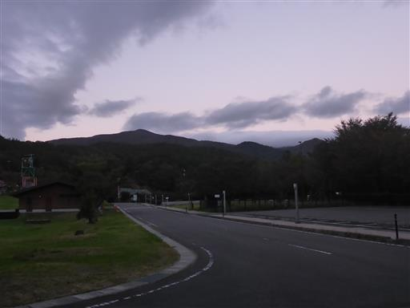
本日の登山は大峠から登るのだが、大峠駐車場に続く林道が崩落しているため、
徒歩で45分ほど手前の日暮滝駐車場に車を停める。標高1050m。
すでに車が4～5台停まっていて、さらに次々と車がやって来る。
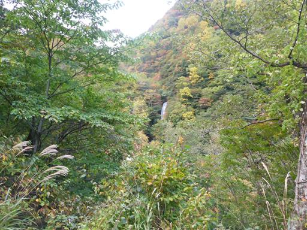
車道を歩いていく。長いだけでなく傾斜もあるので結構つらい。
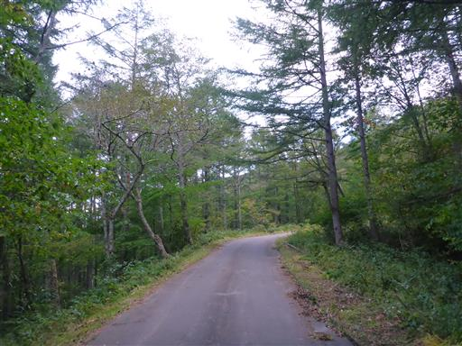
25分ほど歩いて道路崩壊地点に到着。
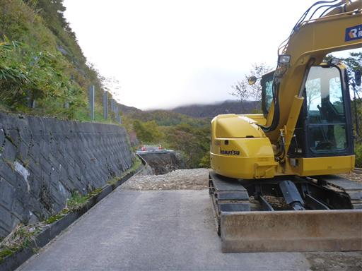
12月14日までと記載されている。来年は車で入れるようになるのだろう。
いまや登山者しか利用しなさそうな道だが、メンテナンスしてくれるのは有難いことだ。
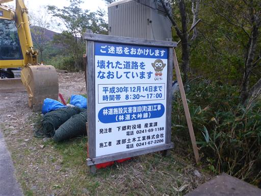
崩壊した道路の脇をすり抜ける。側溝を歩くと崩壊しそうなので、さらにその外側を歩く。
落ちても死ぬほどの高度はないが、ワイヤーもあるため嫌らしい道だ。
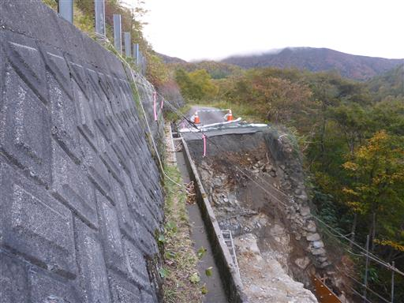
しばらく歩くとダートになる。車で通過するには少々厳しそうな道だ。
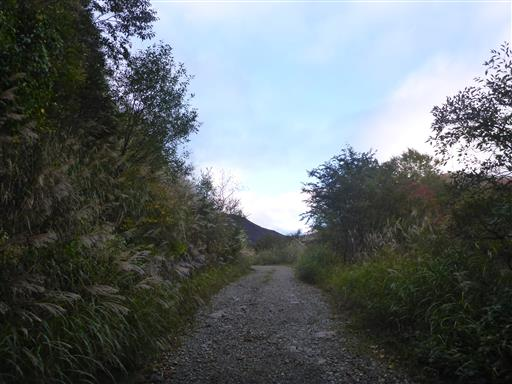
右手にこれから登る予定の流石山方面が見えてくる。
左の鞍部が恐らく大峠だろう。残念ながら少し雲がかかっている。
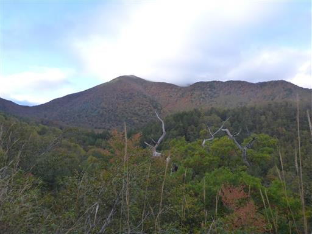
大峠駐車場に到着。地面の縞模様が美しい。
道路が崩壊していなければここまで車で入れる。
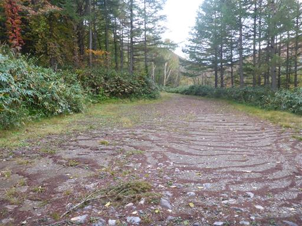
さらに10分ほど歩くと、大峠線の林道終点に到着する。
側に昭和27年施行と記載されている。
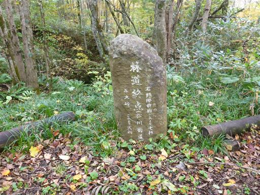
この辺りは紅葉が美しい。もう少し日差しがあればよいのだが…
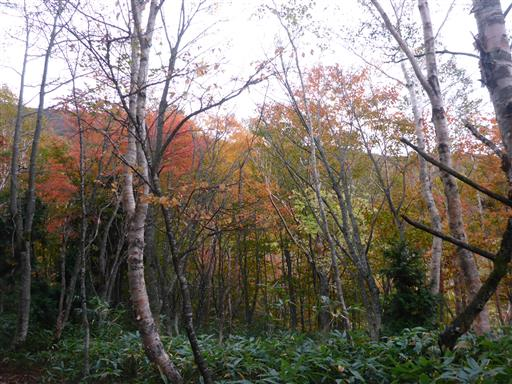
一里塚。大峠を超えるこの道は江戸時代に松川街道として整備された。
自然災害で崩壊した会津西街道の代替道路として整備されたが、
会津西街道が復旧した後は寂れてしまったらしい。
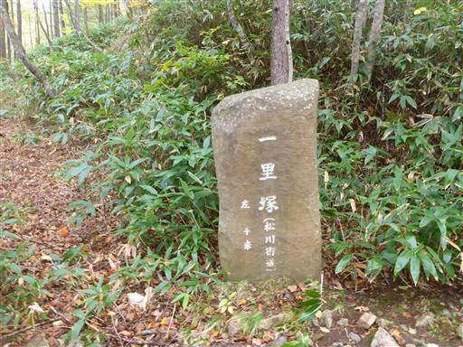
昭和の時代に整備された林道の終点後も広い道は続き、昔の街道の面影が残っている。
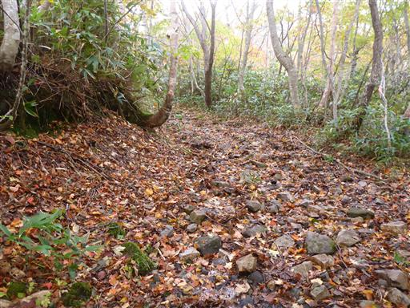
美しい曲線美を持つ木。
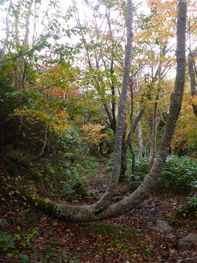
いつの間にやら街道はなくなり登山道になる。一箇所ロープもある。
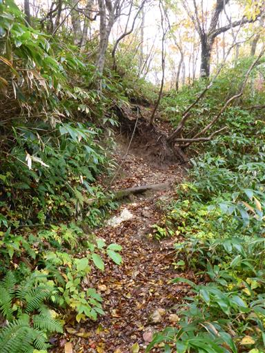
大峠に到着。一気に景色が広がる。
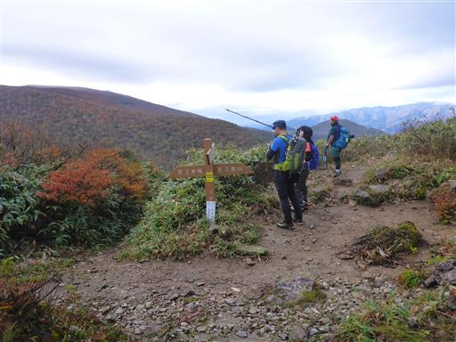
流石山方面を望む。笹に覆われた美しい斜面だ。
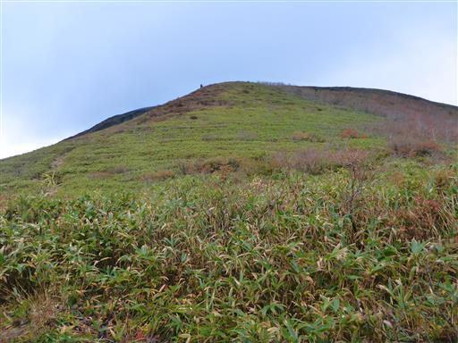
足元には地蔵が祀られている。旅人の無事を祈るために置かれたのだろう。
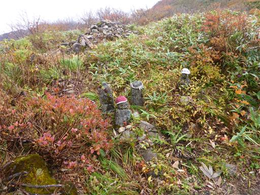
少し標高をあげると、紅葉に彩られた大峠を見下ろすことができる。

急斜面を登り切った先は雲に覆われている。
残念ながら雲の中の縦走になりそうだ。
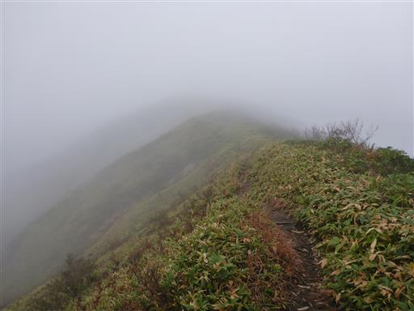
流石山の手前は深い笹に覆われている。
背の低い子供がいたら、かなり歩きにくいだろう。
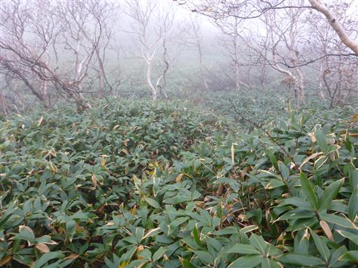
流石山に到着。雲に覆われていて展望はない。
「さすがやま」ではなく「ながれいしやま」と読む。
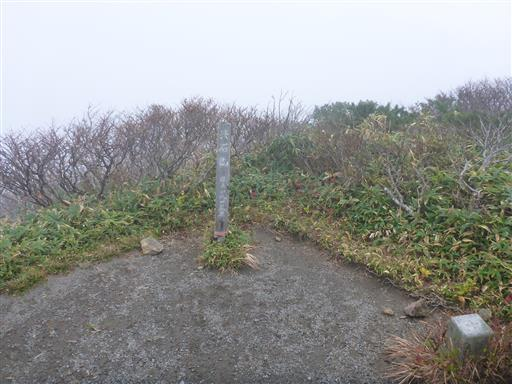
小さな紅葉。花が咲くように、茎の先の葉が紅葉している。
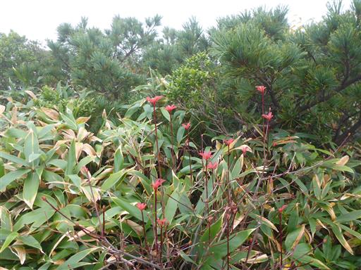
展望がないからと引き返してもしょうがないので、先に進むことにする。
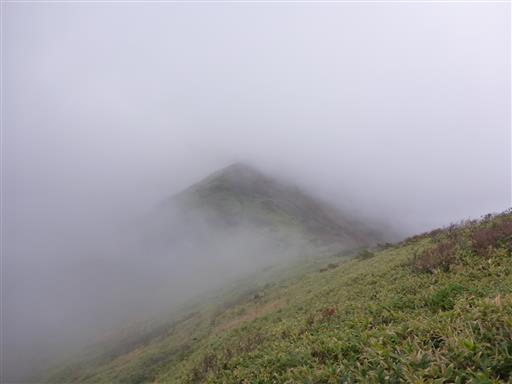
少し雲が取れて眼下に尾根が見える。
天気が絶望的だと少しの展望でも嬉しくなる。
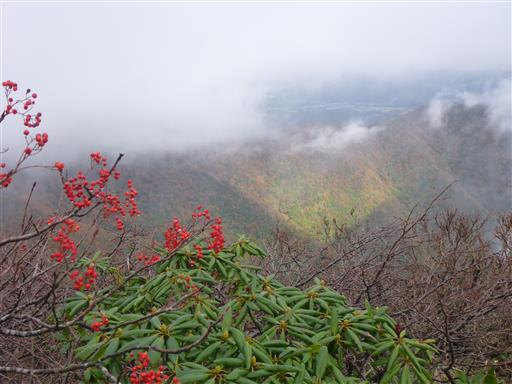
眼下に続く谷。草紅葉はきれいだが、その先は見えない。
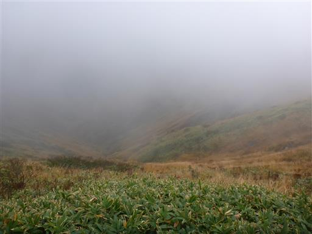
僅かに先に続く稜線が見える。
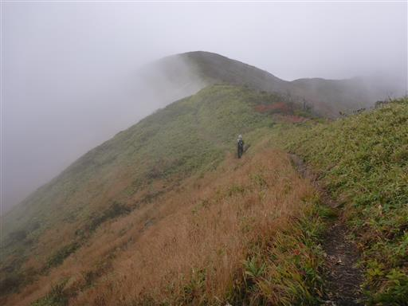
雲が無ければどのような景色が広がっていたのだろう？
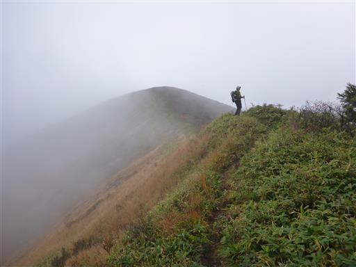
キスゲ小沼。中を覗いてみたが生物の気配は無い。

すぐ近くにある五葉の泉。こちらは先ほどの池よりかなり大きい。
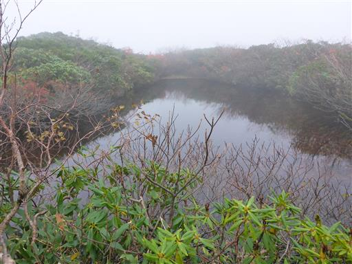
こちらには生物がいる。水面を無数の虫が動いているが、遠すぎてよく見えない。
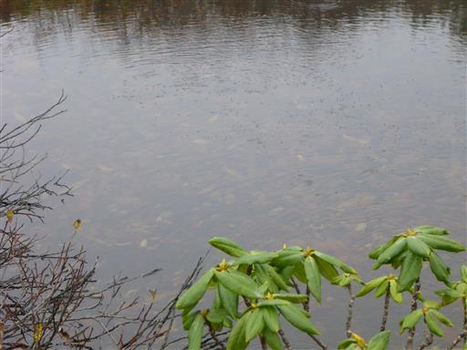
大倉山に到着。地味な山頂だ。
ここもスルーしてさらに先にある三倉山を目指す。
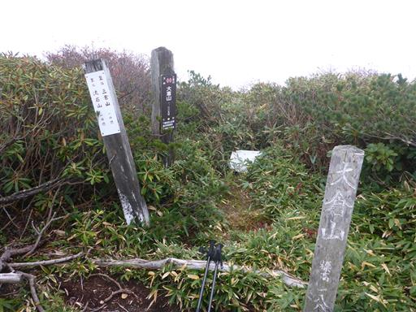
少しだけ展望が広がる。天気は回復傾向か？
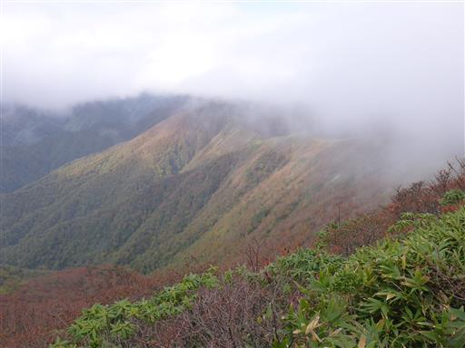
三倉山直下は急斜面。最後の登りだ。
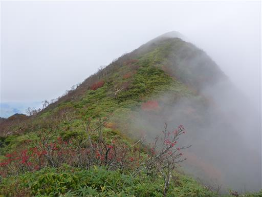
バッタを発見。気温は低いはずだが、元気に飛び跳ねている。
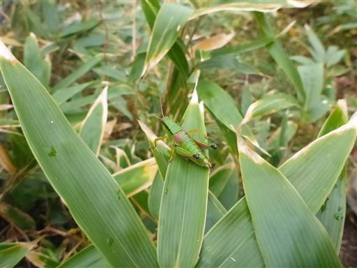
三倉山に到着。新しそうな祠が設置されている。

360度の展望台らしいが雲に覆われていて何も見えない。
展望はないがここで昼食をとる。
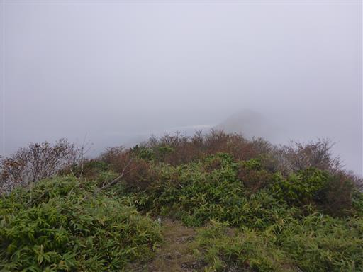
昼食をとったら下山開始。先ほどよりは視界が広がってきている。
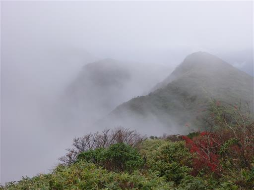
そしてついに視界が開ける。感動の大展望だ。
目の前に伸びている尾根は遥か大佐飛山地まで続いている。
登山道が無い尾根で、尾根に入る踏み跡も見当たらなかった。
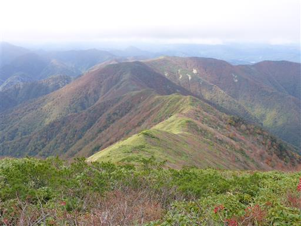
こちらはこれから向かう大倉山。
なるほど、こういう景色だったのかと納得しながら歩いていく。
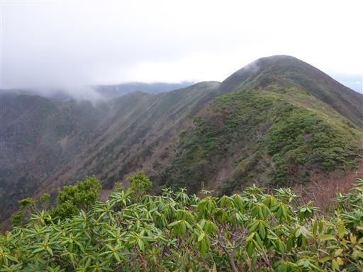
斜面に陽が差すと紅葉が美しく輝く。
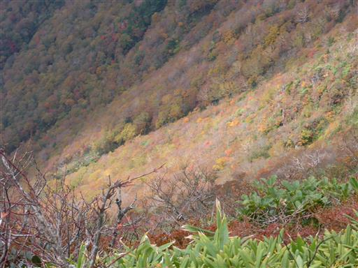
振り返ると先ほど登った三倉山。
こちらは雲がかかっていてまだ山頂部は見えない。
しかし鋭角に聳える格好良い山だという事は分かる。
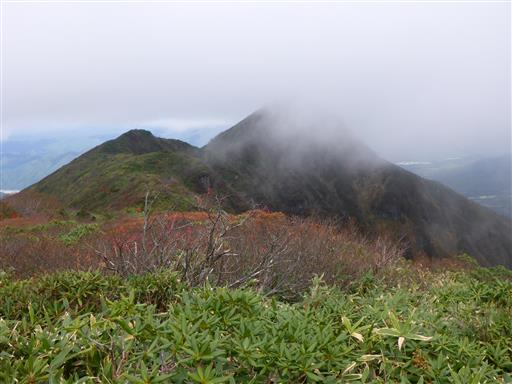
これまで見えなかった稜線が見渡せる。
決して天気は良くないのだが、素晴らしい展望だ。
三倉山まで行って粘って良かった。
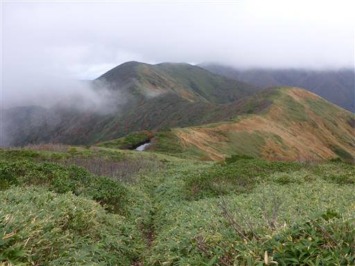
足元に見慣れない実を見つける。
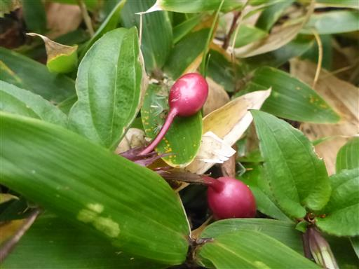
花も咲いている。名前は分からない。
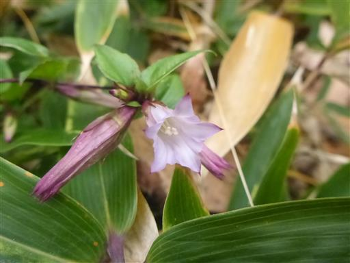
遠くの展望も広がる。丸い頭の山がポコポコと並んでいて面白い。
右手の山は二岐山だろうか？
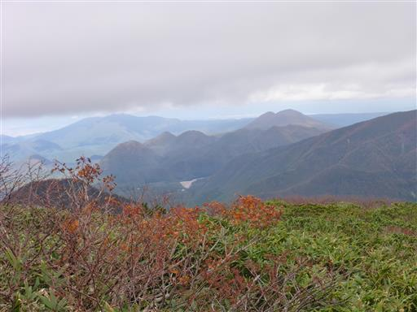
草紅葉が美しい。
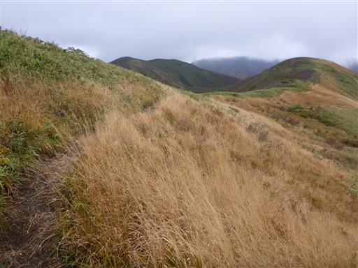
眼下に深山湖が見える。名の通り、深い山の中にあるダム湖だ。
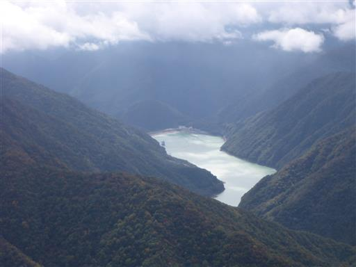
目の前に流石山が見えてくる。
行きには分からなかったが、思った以上に立派な山だ。
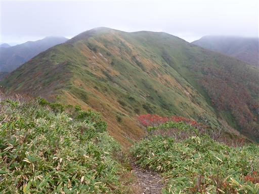
眼下に三斗小屋温泉が見える。側には噴煙が上がっている。
2007年に泊まった懐かしい小屋だ。
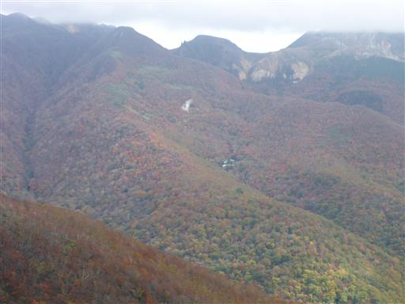
眼下の沢沿いに広がる紅葉は美しい。
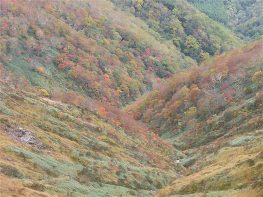
尾根の紅葉も美しい。稜線の紅葉は終わりかけだが、下の方はちょうど今が見頃だ。
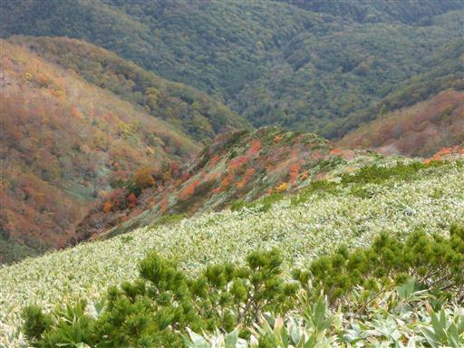
三倉山の山頂部にはまだ雲が引っ掛かっている。
こんな場所から目的地の三倉山が見えるとは思わなかった。
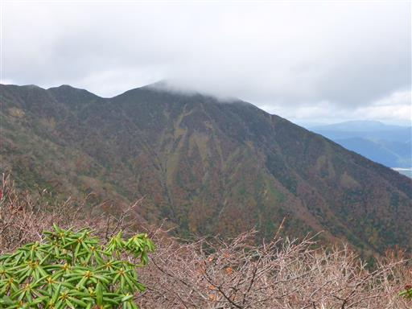
那須岳山頂もあと一歩のところが、なかなか雲が取れない。
こちらは旭岳。非常に立派な山容だ。
登山道にクワガタを発見。もう寒いのでかなり弱っている。
木の幹に捕まらせてあげる。
流石山を通過し、笹原の道を下っていく。
ついに雲の中から那須岳山頂が姿を現す。
雲が沸き上がる中、ようやくドーム型の山頂部を見ることができた。
こちらは三本槍岳。那須連峰の最高峰で、こちらもようやく雲の中から顔を出した。
大峠に到着。ロープウェイから歩いてきた人と立ち話。
駐車場に入るため、朝早くから多くの車が並んでいたらしい。
あとは緩やかな道を下っていくのみ。松川街道の痕跡がなくなっている場所を確認。
登山道はここから左に折れて細い道になる。
街道は長い年月で崩壊してしまったのだろうか？

日差しが出ているため、朝よりも紅葉が一段と美しい。
トカゲを発見。写真を撮っていると、さっさと逃げて行ってしまった。
駐車場に到着。改めて日暮滝を観賞する。
落差の大きい滝で見ごたえがある。
下まで降りる階段が続いていたので行ってみる。
二段の滝になっていて、上の滝はちょっと遠い。滝見学を終えたら帰宅の途に就く。
本日は全国的に晴予報の割に雲が多く少々残念だったが、
帰りは展望が得られたし、紅葉も眺められたしで、満足できる山行だった。
流石山～三倉山は人が少なく、展望が良く、手軽に訪れられるという
ありそうでなかなかない貴重な縦走路で、機会があったらまた行ってみたい。